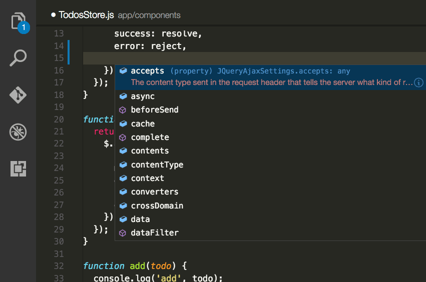
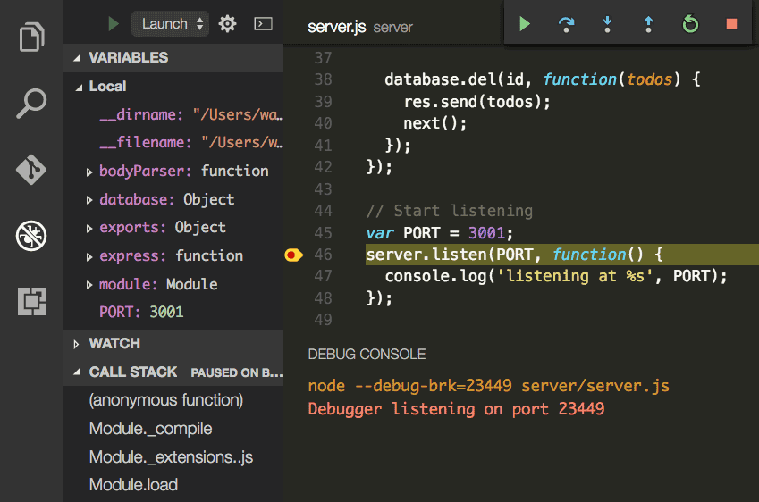
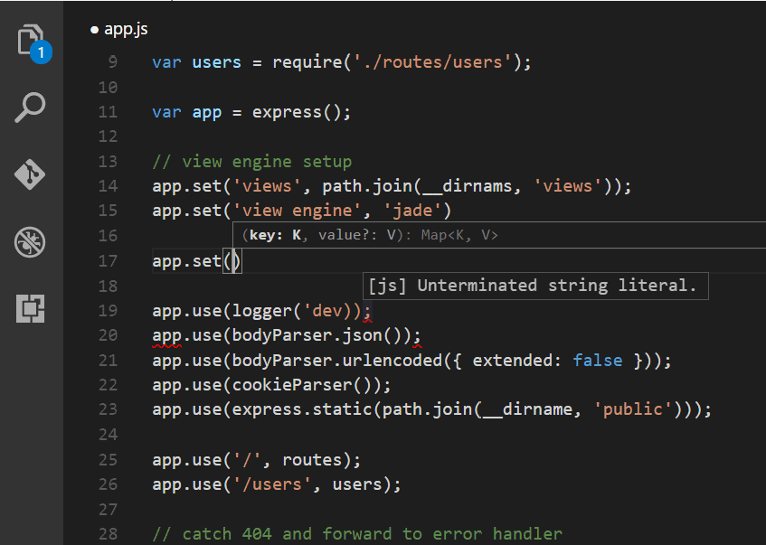
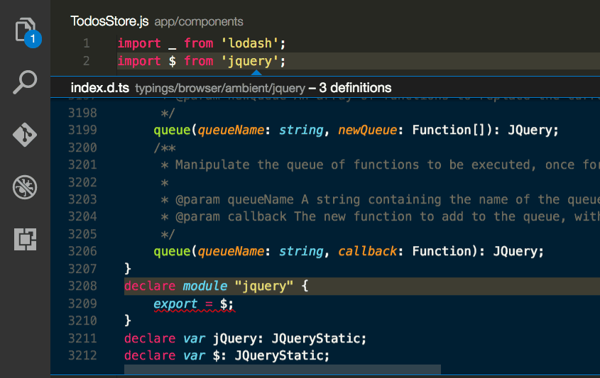
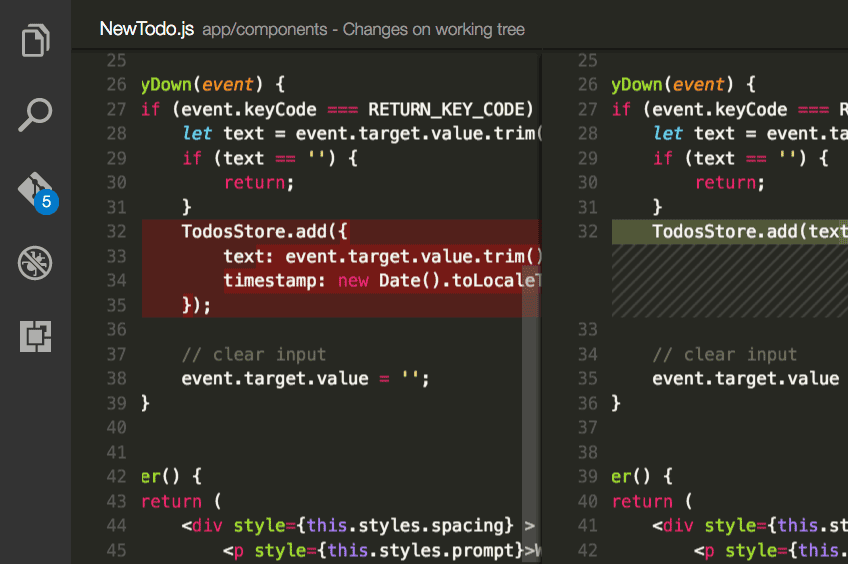

开始（Getting Started）
Visual Studio Code is a lightweight but powerful source code editor which runs on your desktop and is available for Windows, OS X and Linux. It comes with built-in support for JavaScript, TypeScript and Node.js and has a rich ecosystem of extensions for other languages (C++, C#, Python, PHP) and runtimes.
Visual Studio Code 是一个运行在桌面上，并且可用于Windows，Mac OS X和Linux平台的的轻量级且功能强大的源代码编辑器。它配备了内置的JavaScript的，TypeScript和Node.js的支持，并具有其他语言（C ++，C＃，Python和PHP）的扩展以及一个丰富的生态系统。
Visual Studio Code的应用（Visual Studio Code in Action）
智能代码提示和自动补全（Intelligent Code Completion）

Code smarter with IntelliSense - completions for variables, methods, and imported modules.
更聪明的代码智能感知 -完备的变量，方法和导入模块。
简化调试过程（Streamlined Debugging）

Print debugging is a thing of the past. Debug in VS Code with your terminal tools.
打印 Debug 结果是曾经做的事。在 VSCODE 中将用终端工具进行调试。
快速，强大的编辑能力（Fast, Powerful Editing）

Linting, multi-cursor editing, parameter hints, and other powerful editing features.
静态源代码检查，多光标编辑，参数提示，以及其他强大的编辑功能。
代码导航和重构（Code Navigation and Refactoring）

Browse your source code quickly using peek and navigate to definition.
快速浏览你的源代码使用 peek 并导航至定义。
对于产品的Git支持（In-Product Git Support）

Speed up your release cycle with Git support inside your editor.
在您的编辑器中加入对 Git 的支持以加快您的研发效率。
常用扩展（Top Extensions）
Enable additional languages, themes, debuggers, commands, and more. VS Code's growing community shares their secret sauce to improve your workflow.
启用其他语言，主题，调试器，命令等扩展程序。VSCODE 日益增长的社区内有大家分享的私人秘诀，以提高您的工作效率。
第一步（First Steps）
To get the most out of Visual Studio Code, start by reviewing a few introductory topics:
为了更充分的学习Visual Studio Code，我们将从以下几个方面展开：
Setup - Install VS Code for your platform and configure the tool set for your development needs.
安装 - 为您的平台安装VSCODE并且配置您开发所需求的工具集。
The Basics - Introduction to the basic UI, commands, and features of the VS Code editor.
基础知识 - 介绍基本的UI，命令和VS代码编辑器的功能。
Settings - Customize VS Code for how you like to work.
设置 - 为你喜欢的工作方式自定义 VSCODE。
Languages - Learn about VS Code's support for your favorite programming languages.
语言 - 了解VSCODE对您最喜爱的编程语言的支持。
Node.js - This tutorial gets you quickly running and debugging a Node.js web app.
Node.js - 本教程让你快速运行和调试Node.js编写的web应用程序。
Why VS Code? - Read about the design philosophy and architecture of VS Code.
为什么选择VSCODE？ -阅读VSCODE的设计理念和架构。
下载（Downloads）
Download VS Code - Quickly find the appropriate install for your platform (Windows, OS X and Linux).
下载VSCODE - 快速找到合适你平台的安装程序（Windows，Mac OS X和Linux）。
隐私（Privacy）
By default, VS Code auto-updates to new versions, and collects usage data and crash report information. You may opt out of these defaults by disabling them as instructed below:
默认情况下，VSCODE自动更新到新版本，并收集使用数据和崩溃报告信息。您可以通过禁用它们更改这些默认值，如下：
How do I disable auto update?
How do I disable crash reporting?
How do I disable usage reporting?